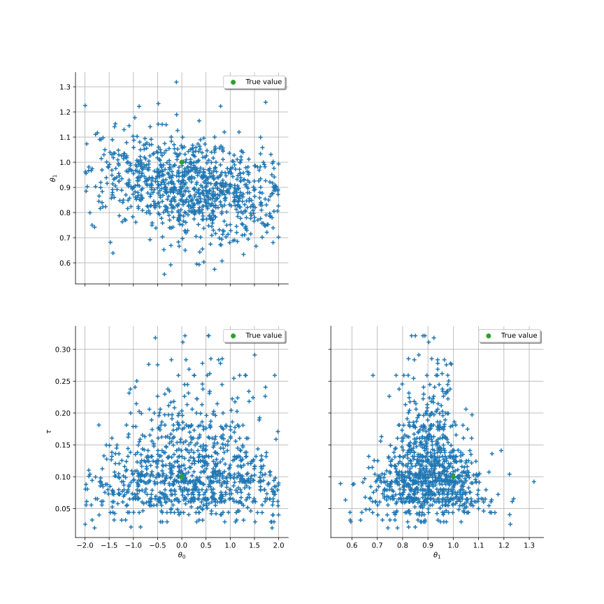

DrawPairs¶
(Source code, svg)
- DrawPairs(sample)¶
Draw 2-d projections of a multivariate sample.
- Parameters:
- sample2-d sequence of float
Samples to draw.
- Returns:
- graph
GridLayout The graph object
- graph
Notes
The point style is given by the ‘Drawable-DefaultPointStyle’ key in the
ResourceMap. The color is given by the first individual color in the default palette.Examples
>>> import openturns as ot >>> from openturns.viewer import View >>> ot.RandomGenerator.SetSeed(0) >>> dim = 3 >>> R = ot.CorrelationMatrix(dim) >>> R[0, 1] = 0.8 >>> distribution = ot.Normal([3.0] * dim, [2.0]* dim, R) >>> size = 100 >>> sample = distribution.getSample(size) >>> clouds = ot.VisualTest.DrawPairs(sample) >>> View(clouds).show()
Examples using the function¶


Linear Regression with interval-censored observations
Linear Regression with interval-censored observations

Bayesian calibration of hierarchical fission gas release models
Bayesian calibration of hierarchical fission gas release models


{kind=link}